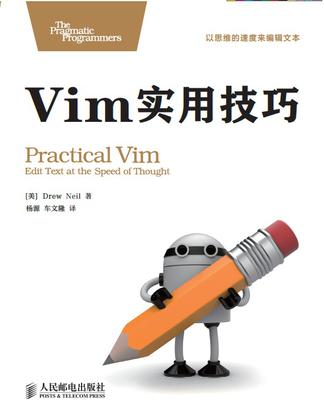

[评]vim实用技巧
《vim实用技巧》就如书名一样讲述了vim许许多多被人所忽视但却灰常实用的技巧，学会了这些使用技巧后，就能更加快捷的操作vim编辑器。

《vim实用技巧》这本书很明显适合那些想要学习vim编辑器，加快工作效率的人。
这本书除了将vim的使用技巧外，还讲了些编码的理念。比如：《vim实用技巧》一书认为最好的操作是一键移动、一键修改，这样的操作命名为点范式；还有它将程序员写代码比喻做画家画画，它认为与画家一样程序员写代码不应该是不断的涂涂改改，而应该像画家一样一气呵成。即使程序中有内容需要修改，应该像画家一样认真观察后，再下笔修改，并用最好最快的方式完成修改。它认为一个程序员如果，大部分的时间都在代码上涂涂改改，那么他写出来的程序绝对不会是什么好程序。
阅读这本书籍时是想着学会更好的操作这个编辑器以提高开发效率，现在书籍读完了。但是linux系统却崩溃了，windows系统下vim又极难使用(windows很多插件安装麻烦)–!。
模式
以下是我学完本书后，觉得对于提高速度非常有帮助的命令和脚本。
普通模式
一开始打开文件所在的模式就是普通模式，普通模式，能够快速的移动、定位以及简单的文本处理。
<C-u>/<C-d>上/下移一屏nG移动到绝对行,n代表任意整数==自动缩进<C-o>/<C-i>回上/下一次跳跃f找到字符,;/,重复往下/上查找*查找当前单词，n查找下一处g~大小写改变，gu/gU小写/大写<C-w>s/<C-w>u水平/垂直切分<C-w>w/h/j/k/l窗口切换<C-w>c关闭窗口<C-w>o只保留单前窗口<C-w>t把当前窗口移到新标签页gk/gj上移/下移实际行e/ge正向/反向移动单词到结尾w/b正向/反向移动单词到开头<C-g>显示当前文件名及状态at一对XML标签内部itXML标签内部a/i/t理解为around、inside、to用于文本待决模式(用于接在y/d/c/等命令后)，特别的daw删除一个单词gt/gT切换到上/下标签`/m跳转/打标签`.上次修改位置`^上次插入位置`[/[ ` 上次修改/复制起始/结束为止`</> ` 上次高亮选区起始/结束为止gf打开对应路径文件"{register}操作用于某个寄存器，特殊的寄存器有无名（”）、复制(0)、剪切(+)、文件名(%)、轮换文件名(#)、上次插入文本(.)@@重复调用宏@:重复上一个命令qA追加命令到宏aq/查找历史窗口q:命令历史窗口
命令模式
通过在普通模式下按:进入，许多强大的功能都需要通过命令模式来完成
:enew新文件:marks查看所有书签:jumps查看所有跳转记录:ls显示缓冲区:buffer N跳转到某个缓冲区:bd n1,n2,n3删除缓冲区:n,m bd删除某个范围的缓冲区:args **/*.*匹配当前目录及子目录所有文件:e!重新读入新文件:wa!保存所有:sp/vsp水平/垂直切分:lcd {path}设置窗口当前目录:windo lcd {path}给窗口设置工作目录:tabe {filename}新标签页编辑文件:tabc/tabo关闭/保留一个标签:pwd显示当前工作目录:e %:h<Tab>单前文件所在路径:!mkdir -p %:h当缓冲区不存在路径是保存文件的方法:w !sudo tee % > /dev/null当没有保存文件权限时的办法:changes改变列表:set path=.,/usr/include设置多路径:'<,'>normal @a并行执行宏:argdo normal @a对所有缓冲区执行录制的宏:nohlsearch暂时关闭查找高亮:!{command}在shell中执行命令，%代表文件名:shell打开shell交互界面:read !{command}将命令输出读入到缓冲中:write !{cmd}将缓冲区作为指定内容标准输入:n,mp范围内执行p命令，.,$p单前到文档结束行执行p命令,%p整个文档执行p命令
插入模式
通过一般模式下按i/a/o等按键进入，也可以使用s/c/r等
<C-w>删除一个单词<C-u>删除到行首<C-o>插入-普通模式<C-c>返回到普通模式<C-r>=启用表达式<C-r>(<C-p>){register}黏贴文本
可视模式
可视模式通过普通模式按下v/V/gv进入，分别代表一般/行选/块选可视模式
gv重复上次高亮选区o切换活动端
查找模式
查找模式是通过在普通模式下，按/或?进入的
\c/\C忽略/强制大小写敏感\v所有_、字母、数字外都有特殊含义(very magic启用)<\w> == \W\zs\w\ze\W<C-r><C-w>智能补全//e光标移动到查找的结尾
替换模式
替换模式是特殊的命令模式，因为功能强大复杂，所以单独讲解。
语法 :[range]s[ubtitute]/{pattern}/{string}/[flags]
- range:% (代表每一行)
- flags:g(全部)、c（交互式替换,y/n/q(退出)/a(替换之后全部))、&重复上一个标志
- pattern:查找需要替换的内容，与查找一样
- string:替换成的内容，可以使用\1,\2,\3代表子串
实例：
多所有文件执行替换：:set hidden,:argdo %s//ABCD/ge e忽略找不到错误
数字修改:%s//\=submatch(0)-1/g
保留所有匹配行:v/re/d或者:g!/re/d
在文件夹范围执行查找操作:vimgrep // **/*.txt
设置
1 | " 将工程中查找到包含字符串的文件使用命令Qargs放入到参数列表中 |